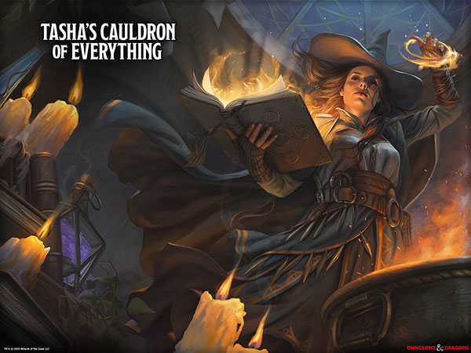
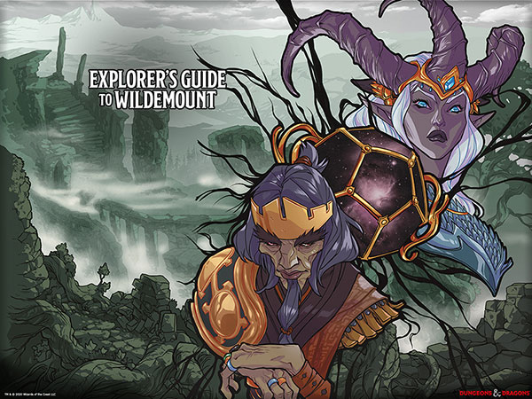

Personangens
Confira os Personagens que fizeram parte das nossas histórias, e que evoluíram junto com nossas próprias habilidades!
Personagens

Crônicas
Que tal dar uma olhada nas Crônicas que escrevemos para nossos personagens, e aquelas que se basearam nas façanhas do grupo?
Crônicas